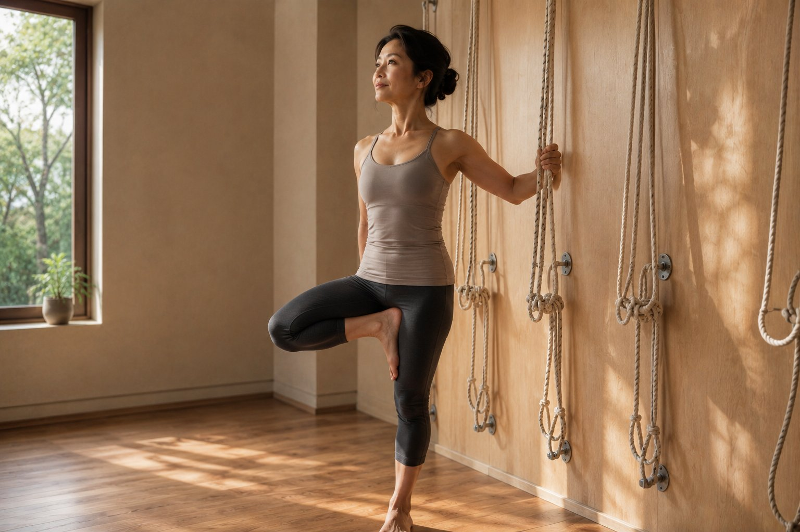

中年後站不太穩、單腳穿褲子會晃？談身體平衡感與防跌穩定力

早上趕出門，褲腳還沒套好，身體先往衣櫃一晃。你以為只是太急，隔天慢慢穿，又下意識伸手找牆。
單腳穿褲要一邊承重、一邊移動另一條腿。視線、足底感覺和足踝與髖的出力變化會影響穩定。先坐著穿衣；若只是想觀察，雙手可扶穩固檯面，試約 3 秒的重心轉移。單次晃動不能評估跌倒風險，若反覆跌倒或突然站不穩應就醫。
單腳穿褲子容易晃，平衡靠哪些條件？
教室觀察。教室可先觀察雙腳著地的重心轉移，再比較輕扶與固定視線時的感受。
一般運動衛教。平衡需要視覺、前庭與身體感覺共同參與，也受環境和健康狀態影響。短暫站立表現不能預測個人跌倒風險。
在家觀察平衡，怎麼先保留支點？
👆 手機可左右滑動
| 看到的狀況 | 可以怎麼觀察 | 無法據此判定 |
|---|---|---|
| 換腳時晃 | 雙腳仍著地，扶穩檯面，稍微往一側移重心。 | 哪個感官系統有問題 |
| 穿衣時不得不抓牆 | 改坐在穩固椅子上穿衣，優先照顧日常安全。 | 一定有肌力不足 |
| 常跌倒或突然不穩 | 停止練習並尋求醫療評估。 | 能靠單腳站自行驗證的病因 |
穿褲抬腳前，先找一個固定視點
影片文字摘錄（畫面）
影片以站姿穿褲為例，先呈現抬腳時支撐側用力，再提示把視線放在前方固定的一點。日常若站不穩，先坐著穿衣。
若突然站不穩，並伴隨單側無力或說話不清，請立即尋求急診協助。反覆跌倒也適合先接受醫療評估。
延伸理解：走路也看得出體態？從你的日常步態，讀懂身體的用力習慣與關節代償、腳是體態的地基：鞋子與足弓如何牽動全身骨盆脊椎
常見問題
人體的平衡控制系統是如何運作的？
視覺、前庭與足底關節等身體感覺共同協助平衡。
為什麼步入中年之後，單腳穿褲穿襪會開始明顯晃動站不穩？
穿衣要同時抬腳、移動衣物與轉移重心，速度和環境都會影響表現。
平衡感的好壞跟全身的體態對稱有直接關聯嗎？
左右外觀不能用來評定平衡能力，仍要看實際任務。
居家自我觀察單腳平衡時，有什麼最重要的安全原則？
先選穩固可扶的支點，雙腳著地觀察，不需要閉眼挑戰。
為什麼壁繩瑜伽特別適合熟齡族群練習平衡感與防跌能力？
繩帶可當支點，練習條件應依個人能力和老師現場判斷調整。
想把剛才的觀察整理成下一步？開始免費體態訊號掃描，從最困擾的日常動作填起。